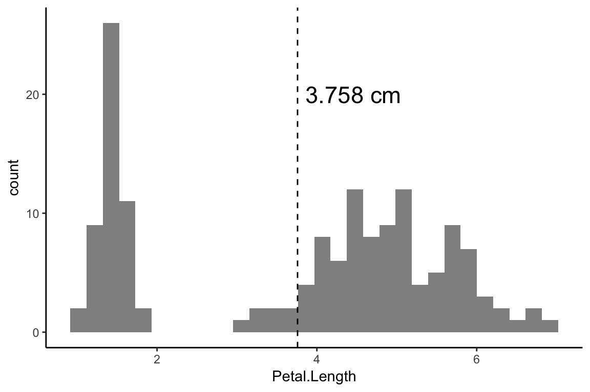
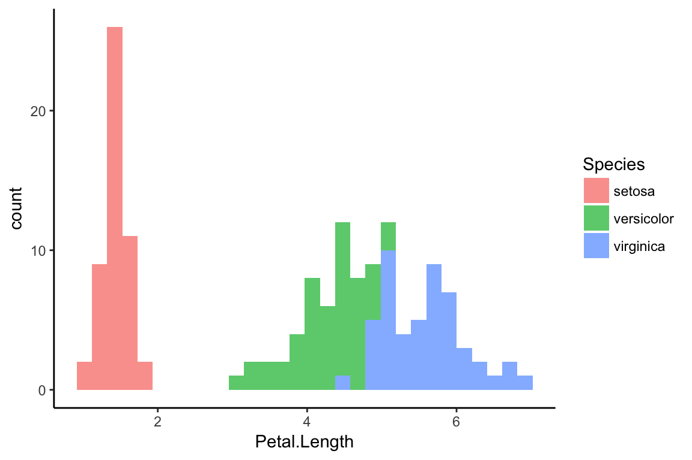
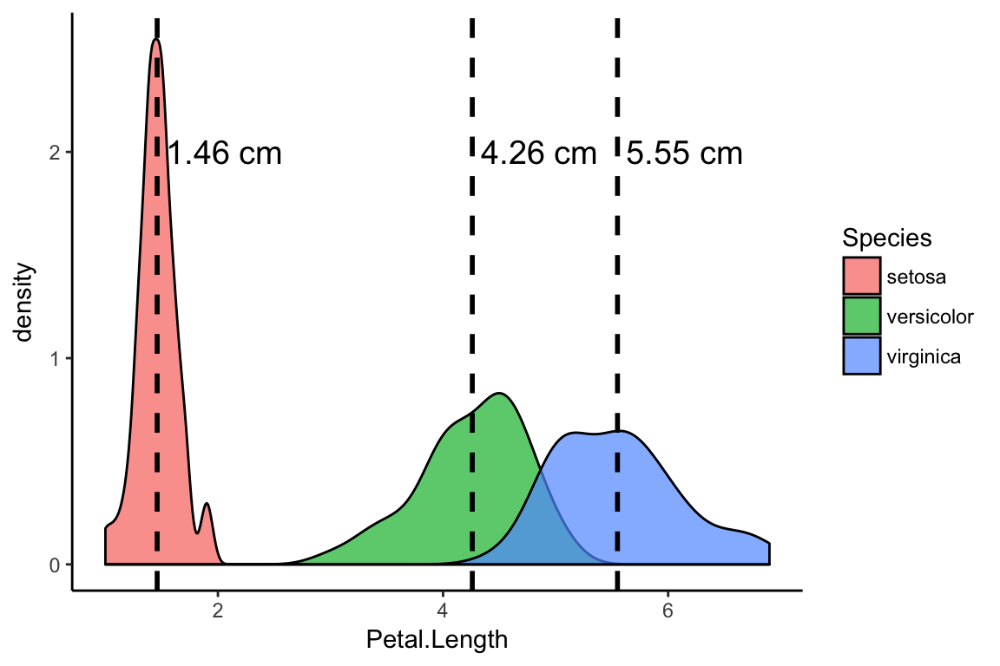

Chapter: 3 Descriptive statistics and data vizualization
As an analyst, often our first goal is to describe a data set. What we mean by “describe” here is something like: provide an efficient represenation of the data that is easy for another person to understand. Two effective tools for this task are descriptive statistics and data visualization. It is important to emphasize that the task here is to summarize and communicate with other humans, which means that you need to do more than just figure out how to do the computations. In his statistics book, ognitive scientist, Dan Navarro, has a really nice paragraph on the philosophy of descriptive statistics, so I thought I would include it here:
Thus it is no small thing to say that the first task of the statistician and the scientist is to summarise the data, to find some collection of numbers that can convey to an audience a sense of what has happened. This is the job of descriptive statistics, but it’s not a job that can be told solely using the numbers. You are a data analyst, not a statistical software package. Part of your job is to take these statistics and turn them into a description. When you analyse data, it is not sufficient to list off a collection of numbers. Always remember that what you’re really trying to do is communicate with a human audience. The numbers are important, but they need to be put together into a meaningful story that your audience can interpret. That means you need to think about framing. You need to think about context. And you need to think about the individual events that your statistics are summarising
With that framing in mind, let’s dive into some common statistical techniques that we can use to efficiently describe our data.
3.1 Measures of central tendency
Answers the question: Where are the data? What is the long-run average value of repetitions of the same experiment or data-generating process?
3.1.1 Mean
For a data set, the mean provides information about the “central tendency” or the “center of mass” of the data, and is typically denoted using the symbol \(\bar{x}\). Note that if our data set consists of random samples from a larger population, we need to be careful to limit the use of the mean to describe our sample since the population mean ( typically denoted \(\mu\)) is different.
To calculate the mean, we take the sum of each value in our data set and then divide by the number of data points. In formal notation this looks like:
\[ \bar{x} = \frac{1}{N} \sum_{i=1}^{N} X_i \]
In R, we can quickly compute the mean using the built-in function mean(). Here we are using the Iris data set, which comes with your R installation. The data include a set of measurements in centimeters of the variables sepal length and width and petal length and width, respectively, for 50 flowers from each of 3 species of iris. The species are Iris setosa, versicolor, and virginica.
m_plength <- mean(d$Petal.Length)
m_plength## [1] 3.758Note that we could also use our dplyr skills to compute the mean like this.
d %>% summarise(m = mean(Petal.Length))## m
## 1 3.758Let’s practice our data viz skills and plot the distribution of petal lengths and include the mean as a vertical dashed line.
d %>%
ggplot(aes(x = Petal.Length)) +
geom_histogram(alpha = 0.7) +
geom_vline(xintercept = m_plength, linetype = "dashed") +
annotate(geom = "text", x = m_plength + .7, y = 20,
label = paste(m_plength, "cm"), size = 6)
What do we see? Well, it looks like the mean does tell us about the center location of these data. One way to think about this is is that the mean serves as a “balancig point” of the data distribution, with the number to the left of the mean being balanced by the numbers to the right of the mean.
But, let’s return to our original goal of providing a useful description of these data. Is m_plength telling us anything useful about these data? Not really. And if we color our plot based on the species of iris, we can see what’s going on here.
d %>%
ggplot(aes(x = Petal.Length, fill = Species)) +
geom_histogram(alpha = 0.7) 
It looks like there are actually three different distributions of petal length in our data set. We can use our dplyr skills to compute the mean for each distribution separately:
ms_petal_length <- d %>%
group_by(Species) %>%
summarise(m = mean(Petal.Length)) %>%
mutate(m = round(m, digits = 2))And add that information to our plot:
d %>%
ggplot(aes(x = Petal.Length, fill = Species)) +
geom_density(alpha = 0.7) +
geom_vline(aes(xintercept = m), data = ms_petal_length, linetype = "dashed", size = 1) +
geom_text(aes(label = paste(m, "cm"), x = m + 0.6, y = 2), data = ms_petal_length, size = 5)
I would argue that these three numbers – the mean for each type of iris species in the data set – give us a more useful description of the central tendency. And you can say something like, “The average petal length for the setosa species is 1.46.”
3.1.2 Median
3.1.3 Mode
3.2 Measures of variability
Answers the question: How spread out are the data?